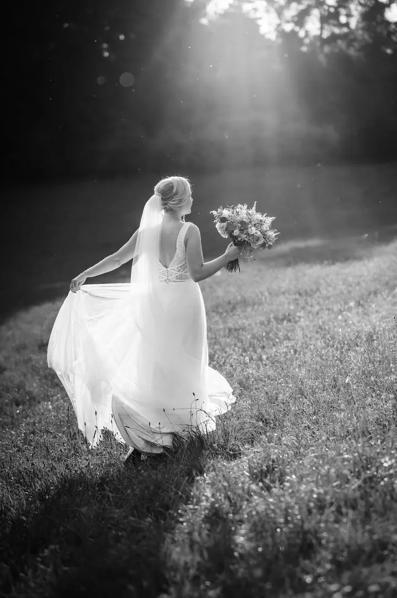
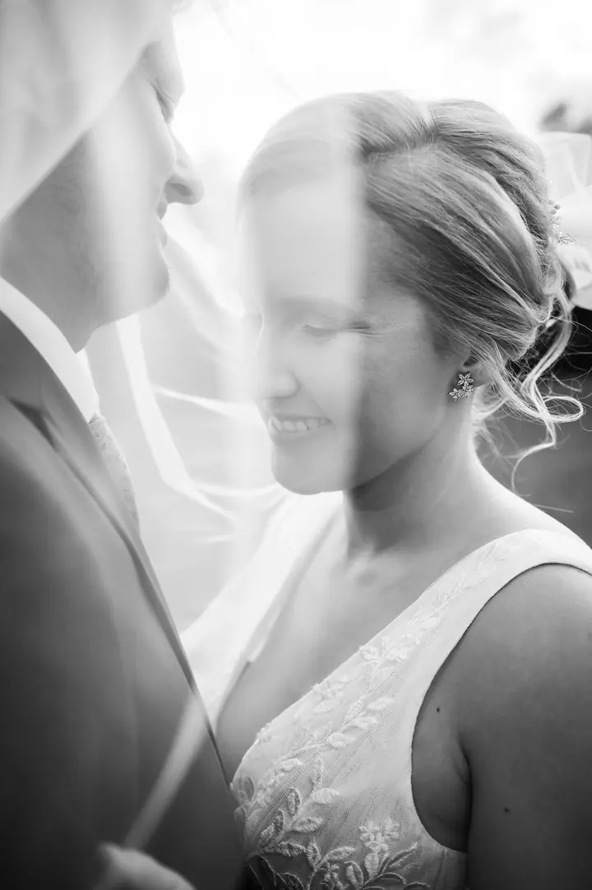

Svatební příběhy
Fotím celý svatební den od příprav až po večerní zábavu, podle balíčku 8, 12 nebo 14 hodin. Fotky dostanete upravené na USB, ve webové galerii a část rovnou vytištěnou.

Svatební fotograf
Jmenuji se Radim Hájek a fotím svatby od prvních příprav až po poslední tanec. Nejvíc mě baví chvíle, které nikdo nehraje: smích, objetí a děti, co si na svatbě udělají vlastní zábavu.
Zeptat se na termín
Fotím celý svatební den od příprav až po večerní zábavu, podle balíčku 8, 12 nebo 14 hodin. Fotky dostanete upravené na USB, ve webové galerii a část rovnou vytištěnou.
Jsem empatický a láskyplný člověk, který je pro každou srandu. Na svatbě nejsem jen ten s foťákem v rohu, rád se s vámi i s vašimi hosty zasměju a pomůžu, aby byl den uvolněný.
Bydlím v Lipůvce u Brna, ale za svatbami jezdím po celé republice. Hodně fotek nakonec ladím do černobílé, protože v ní vynikne světlo, emoce a lidé, o které jde.
Na svatby vozím i vlastní fotokoutek s neomezeným tiskem. Hosté si tak odnesou fotku hned a vy budete mít vzpomínky i z druhé strany objektivu.

Sejdeme se, probereme průběh dne, místa a to, na čem vám nejvíc záleží. V balíčku Svatba II spolu zvládneme i předsvatební focení.
Podle zvoleného balíčku s vámi strávím 8, 12 nebo 14 hodin. Fotím nenápadně, ale když je potřeba, rád vás postrčím a rozesměju.
Z celého dne vyberu ty nejlepší záběry a každý pečlivě upravím. Podle balíčku dostanete minimálně 250, 450 nebo 550 fotografií.
Fotky dostanete ve webové galerii, k tomu tištěné fotografie a podle balíčku také fotky na USB nebo profesionální fotoknihu 30×30 cm.
Balíčky začínají na 20 000 Kč za 8 hodin focení, dál nabízím Svatbu II za 26 000 Kč a Svatbu III za 38 000 Kč. Ceny jsou k dalšímu jednání, takže se klidně ozvěte s tím, co potřebujete.
Podle balíčku minimálně 250, 450 nebo 550 upravených fotografií. Ke každému balíčku patří i tisk fotek ve formátu 13×19 a 30×45.
V balíčku Svatba I je doprava v rámci České republiky v ceně. Bydlím v Lipůvce u Brna a za svatbami rád vyrazím kamkoliv.
Ano, fotokoutek na 4 hodiny s neomezeným tiskem je součástí balíčku Svatba III. Když ho nechcete, cena balíčku se sníží o 6 000 Kč, bez fotoknihy o dalších 2 000 Kč.